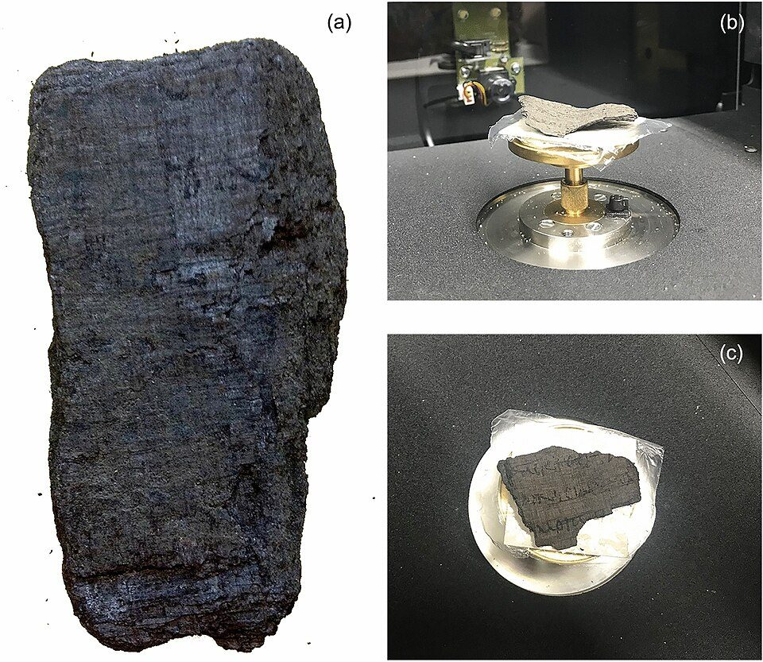
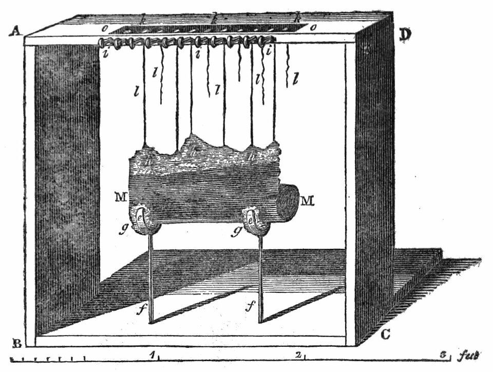
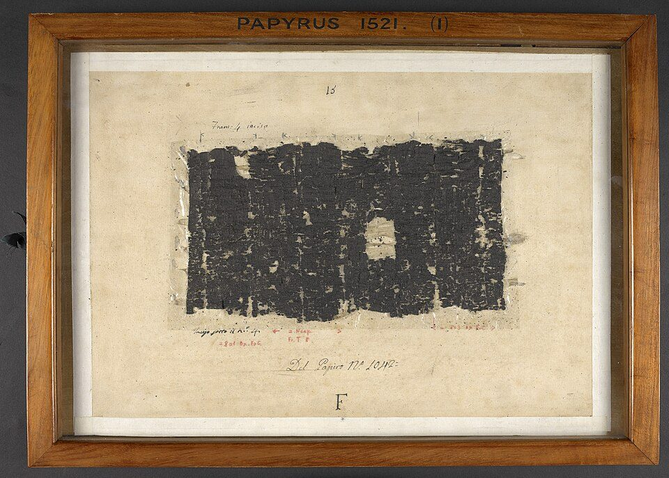

Os papiros de Herculano
A única biblioteca da Antiguidade clássica que chegou até nós inteira chegou também como carvão. Durante dois séculos, toda tentativa de lê-la a destruiu um pouco. A leitura, quando enfim começou, não encostou em nenhum rolo.
- Onde
- Villa dei Papiri, Herculano
- Coordenadas
- 40°48′23″N 14°20′51″E
- Data do soterramento
- 79 d.C.
- Profundidade
- ≈ 37 m
- Rolos inventariados
- 1.814
- Lidos sem abrir
- desde 2023
Em 79 d.C., o Vesúvio não sepultou Herculano em cinza, como fez com Pompeia. Sepultou-a em fluxo piroclástico — uma avalanche de gás e material incandescente a centenas de graus, que desceu a encosta mais rápido do que qualquer um poderia correr e endureceu sobre a cidade em até cerca de trinta metros de espessura — os papiros, na villa, ficariam a quase quarenta metros de profundidade. Foi pior para quem estava vivo. Foi melhor para o que era de matéria orgânica.
Numa villa à beira-mar havia uma biblioteca. O que se recuperou dela são 1.814 rolos e fragmentos catalogados, que podem corresponder a algo como oitocentos volumes originais. O calor os carbonizou sem os queimar: não havia oxigênio suficiente para combustão. O papiro virou carvão e manteve a forma. As letras continuaram lá, escritas em tinta que também é carbono, em cima de um material que agora também era carbono.
É a única biblioteca do mundo antigo que sobreviveu completa. E é ilegível, porque abrir um rolo de carvão é o mesmo que quebrá-lo.

01A biblioteca
Em 1750, camponeses que cavavam um poço esbarraram na villa; nos anos seguintes, operários a serviço da corte de Bourbon abriram túneis na rocha endurecida. Não sabiam o que tinham achado: os primeiros rolos, retirados em 1752, foram descartados como pedaços de madeira queimada, e há relatos de que alguns foram usados como lenha ou tochas antes de alguém notar as letras.
O ritmo dos achados está registrado. Vinte e um volumes e fragmentos no outono de 1752; onze na primavera de 1753; duzentos e cinquenta no verão do mesmo ano; e, entre a primavera e o verão de 1754, na sala da biblioteca propriamente dita, 337 papiros gregos e 18 latinos. O inventário oficial hoje é de 1.814 rolos e fragmentos.
O conteúdo identificado até agora é filosófico e tem dono. Pelo menos 44 obras são de Filodemo de Gadara, poeta e filósofo epicurista do século I a.C. Há também textos de Epicuro e de Crisipo. A leitura mais econômica é que aquela era a biblioteca de trabalho de Filodemo, que teria vivido e escrito na villa.
02Dois séculos destruindo o que queriam ler
Em 1756, o padre Antonio Piaggio inventou uma máquina para desenrolar os papiros: uma armação com fios de seda colados à superfície do rolo e pesos que puxavam, milímetro a milímetro. O primeiro rolo levou quatro anos.

Entre 1802 e 1806, o reverendo John Hayter desenrolou e decifrou parcialmente cerca de duzentos papiros. Outros métodos foram tentados ao longo do século XIX, alguns químicos, quase todos desastrosos. Até meados do século XX, apenas 585 rolos ou fragmentos tinham sido completamente desenrolados — e "completamente desenrolado" costuma significar "reduzido a lascas que precisam ser remontadas".

03O problema é a tinta
A ideia de usar tomografia em vez de faca é antiga e parece óbvia: um tomógrafo lê densidade, então bastaria escanear o rolo e separar as camadas por software. Ela falhou por décadas, e a razão é química.
A tomografia distingue materiais por densidade. Num manuscrito medieval, a tinta leva ferro e aparece brilhante contra o pergaminho. Nos papiros de Herculano, a tinta é fuligem — carbono — aplicada sobre papiro que a erupção transformou em carbono. Para o aparelho, a letra e o papel têm praticamente a mesma densidade. Escanear produzia um bloco cinzento uniforme.
O que destravou o problema não foi um tomógrafo melhor, e sim mudar o que se procurava. Em vez de buscar contraste de densidade, passou-se a buscar textura: a superfície onde houve tinta tem um relevo microscópico levemente diferente do papiro nu. É sutil demais para o olho humano reconhecer numa varredura, e é exatamente o tipo de padrão que um modelo de aprendizado de máquina aprende a detectar depois de ver exemplos suficientes.
04O desenrolar virtual
A técnica tem nome — virtual unwrapping — e um autor principal: Brent Seales, da Universidade do Kentucky. O procedimento tem três etapas. Primeiro, uma varredura de altíssima resolução por micro-CT com raios X de síncrotron, feita em instalações como o Diamond Light Source, no Reino Unido, e o ESRF, na França. Depois, a segmentação: identificar, no volume tridimensional, onde está cada camada enrolada — trabalho de seguir uma folha que se dobra sobre si mesma centenas de vezes. Por fim, o achatamento dessa superfície num plano e a detecção da tinta.
A prova de conceito veio de outro objeto. Em 2015 e 2016, Seales aplicou o método ao rolo de En-Gedi, um pergaminho hebraico carbonizado, e recuperou o texto — que se revelou o início do Levítico. Em 2018 ele demonstrou o desenrolar virtual de partes do P.Herc. 118, da Biblioteca Bodleiana.
05O prêmio
Em março de 2023, Seales somou forças com Nat Friedman e Daniel Gross e lançou o Vesuvius Challenge: as varreduras foram publicadas abertamente e um conjunto de prêmios em dinheiro foi oferecido a quem conseguisse ler o que estava lá. É ciência aberta com incentivo de competição, e funcionou depressa.
Em 12 de outubro de 2023, Luke Farritor, estudante de ciência da computação de 21 anos, detectou a primeira palavra: πορφύρας — porphyras, púrpura. Levou quarenta mil dólares.
Em 5 de fevereiro de 2024, o grande prêmio de setecentos mil dólares foi entregue a uma equipe que recuperou cerca de 5% de um rolo — mais de dois mil caracteres. O texto, do rolo PHerc. Paris. 4, do Institut de France, é um tratado desconhecido sobre o prazer — provavelmente de Filodemo, embora a autoria não esteja estabelecida — que discute se o que é escasso dá mais prazer que o abundante, com a música e a comida entre os exemplos.
06De palavras soltas a obras inteiras
O salto começou em 2025 e se completou em 2026, e é o que muda a natureza do caso. Não se trata mais de recuperar uma palavra ou um parágrafo.
Em maio de 2025, o PHerc. 172, guardado na Biblioteca Bodleiana, teve título e autor recuperados sem ser aberto: Dos Vícios, de Filodemo — um tratado sobre ganância, arrogância e outros traços de caráter. Foi a primeira vez que isso aconteceu com um rolo fechado, e rendeu a Marcel Roth e Micha Nowak um prêmio de sessenta mil dólares. Em junho de 2026, do mesmo rolo saíram mais de setenta colunas de texto.
Do PHerc. 1667, em Nápoles, saiu quase um metro e meio de texto em vinte colunas. A cópia é datada do século II a.C., talvez do fim do século III — entre as mais antigas do acervo —, e o conteúdo é um tratado de ética. Autor e título continuam desconhecidos, porque o alto do rolo, onde ficaria o título, se perdeu; mas o texto cita Aristocreonte, sobrinho do estoico Crisipo, o que abre a hipótese de ser obra estoica perdida.
E do PHerc. 139 saiu Sobre os Deuses, livro 8, de Filodemo — que demonstra, sozinho, que a obra tinha ao menos oito livros, coisa que ninguém sabia.
A biblioteca não foi escavada de novo, nem aberta, nem restaurada. Ela foi simplesmente lida — com raios X, matemática e um modelo treinado para ver o que o olho não vê. O que separa 2026 de duzentos e setenta anos anteriores
07As leituras, da mais sóbria à mais improvável
O resto da biblioteca é mais filosofia epicurista
A previsão mais provável, e a menos glamourosa. Das obras já identificadas, pelo menos 44 são de Filodemo, e o conjunto tem a cara de uma biblioteca de trabalho de um filósofo específico, montada em torno dos seus interesses. Epicuro e Crisipo completam o quadro.
Isso não é decepção. Grande parte da filosofia helenística chegou até nós apenas por citação em terceiros; ter textos primários, em cópias contemporâneas, é ganho considerável mesmo sem nenhuma surpresa.
Há uma segunda biblioteca, latina, ainda enterrada
A villa nunca foi inteiramente escavada — boa parte segue sob dezenas de metros de rocha e sob a cidade moderna de Ercolano. Uma residência romana daquele porte normalmente teria acervo em grego e em latim, e os 18 papiros latinos já recuperados sugerem que a seção existe.
O que impede a confirmação não é científico, é prático: escavar exigiria obra de grande porte embaixo de uma cidade habitada, com custo e risco altos. A hipótese é razoável e permanece sem teste.
Vão aparecer obras perdidas da literatura clássica
A esperança recorrente: peças de Sófocles, livros perdidos de Lívio, poesia de Safo. Não é impossível — qualquer biblioteca particular tinha literatura além de filosofia, e o PHerc. 1667 mostra que material inesperado aparece.
Mas a distribuição do que já se leu aponta firmemente para filosofia. A expectativa de tesouro literário diz mais sobre o que nós gostaríamos de ter do que sobre o que aquele proprietário colecionava.
Há textos que reescreveriam a história das religiões
Circula a ideia de que a biblioteca guardaria evangelhos perdidos ou documentos capazes de abalar o cristianismo. A cronologia resolve isso sem discussão: Filodemo morreu por volta de 40 a 35 a.C., e o acervo reflete os interesses dele. A villa foi soterrada em 79 d.C., quando o cristianismo era um movimento marginal no Levante, sem presença na biblioteca de um epicurista da baía de Nápoles.
O epicurismo, aliás, é uma filosofia que trata os deuses como indiferentes aos assuntos humanos. É difícil imaginar acervo menos propenso a guardar escritura de qualquer religião.
08Cronologia
- 79 d.C.O Vesúvio sepulta Herculano sob fluxo piroclástico, a cerca de 37 metros. Os papiros carbonizam sem queimar.
- 1750Camponeses cavando um poço esbarram na villa. A escavação por túneis, a serviço da corte de Bourbon, começa em seguida.
- 1752 – 1754Os primeiros papiros são retirados — e alguns descartados como madeira queimada. Em 1754 a sala da biblioteca entrega 337 papiros gregos e 18 latinos.
- 1756O padre Antonio Piaggio constrói a máquina de desenrolar. O primeiro rolo leva quatro anos.
- 1802 – 1806John Hayter desenrola e decifra parcialmente cerca de duzentos papiros.
- meados do séc. XXApenas 585 rolos ou fragmentos foram completamente desenrolados, com perda severa de material.
- 2015 – 2016Brent Seales aplica o desenrolar virtual ao rolo de En-Gedi e recupera o texto sem abri-lo. Prova de conceito.
- 2018Demonstração do método em partes do P.Herc. 118, da Biblioteca Bodleiana.
- março de 2023Lançamento do Vesuvius Challenge, com varreduras abertas e prêmios em dinheiro.
- 12 de outubro de 2023Luke Farritor, 21 anos, detecta a primeira palavra num rolo fechado: porphyras, púrpura.
- 5 de fevereiro de 2024O grande prêmio é entregue: cerca de 5% de um rolo, mais de dois mil caracteres, texto desconhecido de Filodemo.
- maio de 2025Título e autor do PHerc. 172 identificados sem abertura — Dos Vícios, de Filodemo. Prêmio de US$ 60 mil a Marcel Roth e Micha Nowak.
- junho de 2026Mais de 70 colunas do PHerc. 172, cerca de 1,5 m de texto do PHerc. 1667 e o livro 8 de Sobre os Deuses no PHerc. 139.
09O que continua em aberto
Quase toda a biblioteca. Poucos rolos foram lidos por completo. O método existe, funciona e ainda é caro e lento: cada varredura exige tempo de síncrotron, e a segmentação de cada rolo é trabalho pesado. O gargalo deixou de ser científico e passou a ser de escala.
A parte não escavada da villa. Se houver seção latina, e se houver mais salas com prateleiras, o acervo pode ser várias vezes maior do que o que temos. Essa é a única pergunta do dossiê que exige, novamente, cavar.
E o que estava na sala ao lado. Vale lembrar que os 1.814 rolos são o que sobrou de uma única villa, de um único proprietário, numa única cidade pequena. Não era uma biblioteca notável no seu tempo. Era um acervo particular comum — e é o mais completo que a Antiguidade nos deixou.
10Fontes consultadas
Este dossiê é texto autoral. As fontes abaixo foram consultadas para apuração de datas, números e atribuições; nenhuma foi reproduzida.
- Diamond Light Source — comunicado de 2026 sobre as obras recuperadas dos PHerc. 172, 1667 e 139 por micro-CT de síncrotron.
- Documentação pública do Vesuvius Challenge — lançamento em 2023, prêmios, e os resultados de outubro de 2023 e fevereiro de 2024.
- Seales, B. et al. — trabalhos sobre virtual unwrapping, incluindo o rolo de En-Gedi e o P.Herc. 118.
- Verbete enciclopédico consolidado sobre os papiros de Herculano — cronologia da descoberta, inventário e histórico dos desenrolamentos.
- Stabile, S.; Palermo, F.; Bukreeva, I.; Mele, D. et al. — imagens e caracterização dos rolos carbonizados, CC BY 4.0.
- Literatura de referência sobre Filodemo de Gadara e a composição do acervo da Villa dei Papiri.